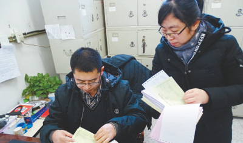
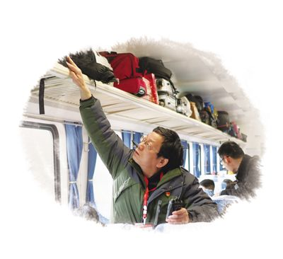
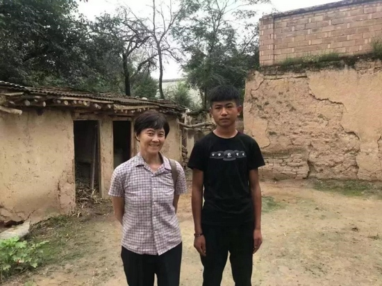
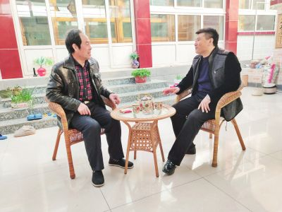
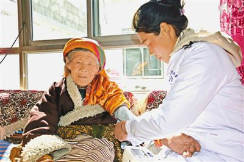
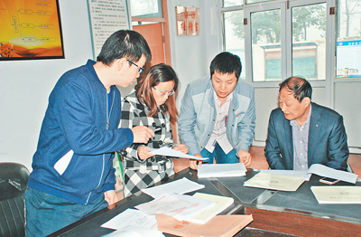

智慧党建云平台
你好,
党员中心
退出登录
登录
搜索
党员队伍建设
当前位置：
首页
>
党员队伍建设

把监督触角伸到每个角落——河北廊坊探索构建“四位一体”监督格局
河北廊坊市纪委监委立足实际，积极打造纪律、监察、派驻、巡察“四位一体”监督模式，大力推进纪律监督、监察监督、派驻监督、巡察监督“四个全覆盖”，着力构建权责清晰、衔接顺畅、协同高效监督机制，力求实现常态化、近距离、可视化、全天候监督。
382
0
2019-03-01

先锋足印：列车上的临时党支部
2月14日15时，九江至广州东K4265次列车11号车厢突然一阵喧闹。江西上饶籍旅客朱艳梅抱着一岁多的女儿求助：“救救我女儿！”列车长、党支部书记张爱闻讯赶来。
299
0
2019-03-01

最美国网人：王娅用生命之火点亮寒门学子求学之路
一位普普通通的国家电网退休职工，用她的善举诠释了生命意义、人生的价值。
326
0
2019-03-01
赴汤蹈火保民安——追记合肥消防救援支队肥东中队副班长孟鸣之
面对肆虐的火魔，他奋勇当先、身负重伤，经全力抢救不幸牺牲。1月18日，合肥消防救援支队肥东中队副班长孟鸣之的年龄永远定格在22岁。从事消防救援4年间，他始终牢记使命，恪尽职守，无私奉献，用生命守护平安，践行了对党忠诚、纪律严明、赴汤蹈火、竭诚为民的铮铮誓言。
333
0
2019-03-01

诚信为本谋民富——记北京市平谷区峪口镇胡家营村党支部书记方户生
一个村支书就应该有这样的诚信
282
0
2019-03-01

“好日子就是我的长寿秘诀”——记翻身农奴、拉萨市曲水县三有村桑珠卓玛
翻身农奴、拉萨市曲水县三有村桑珠卓玛
328
0
2019-03-01
全国人大代表、广西苍梧县山坪村党支部书记祝雪兰：咬定青山谋发展 生态红利惠瑶民
320
0
2019-03-01
社区有个“秀书记”——记全国十大“最美城乡社区工作者”付秀秀
1998年，25岁的付秀秀来到高安市筠阳街道筠泉社区，开始为社区居民服务，在平凡的岗位上兢兢业业，一干就是20年。
325
0
2019-03-01

这个扶贫干部是好娃
柴晓飞是个“90后”，工作单位为闻喜县国税局，2015年他在后川村担任扶贫工作队队员，2017年挑起了第一书记的担子。
229
0
2019-03-01
新疆伊犁昭苏县发挥远教优势 实现精准服务
为进一步拓展远教阵地的党员服务、学习提质等功，新疆伊犁市昭苏县着力发挥党员教育阵地作用，依托远程教育优势，积极创新远程教育扶智，拓宽思路方法，努力搭建为民服务平台，为扎实开展群众工作、精准服务基层党建奠定良好基础。
284
0
2018-09-21
共 56 条
上一页
1
2
3
4
5
6
下一页
智慧党建云平台
咨询专线：